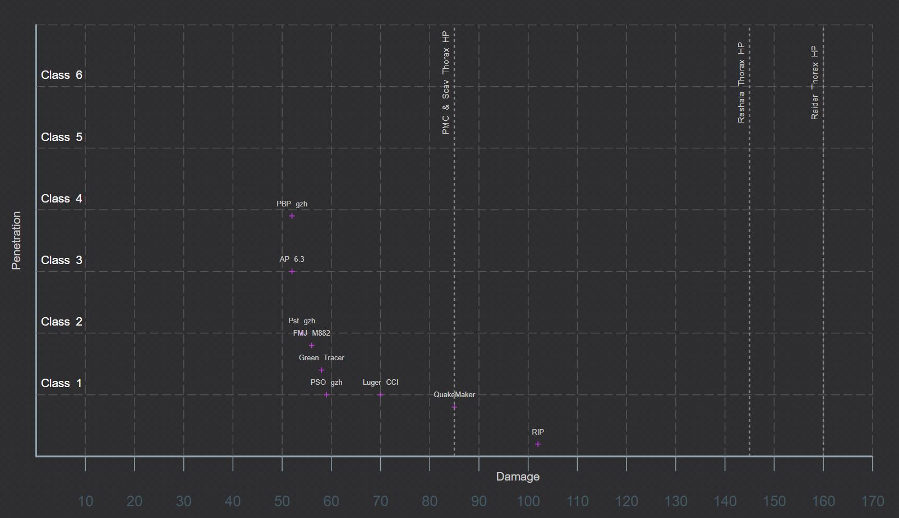
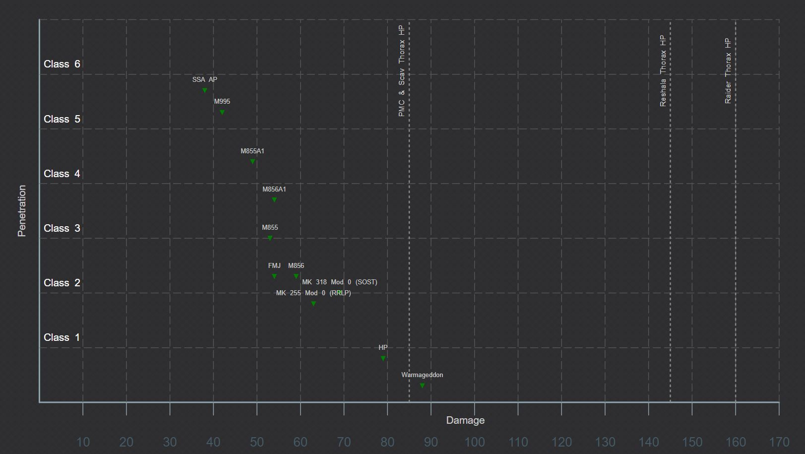
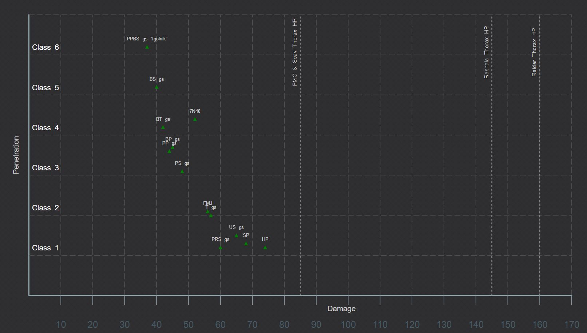
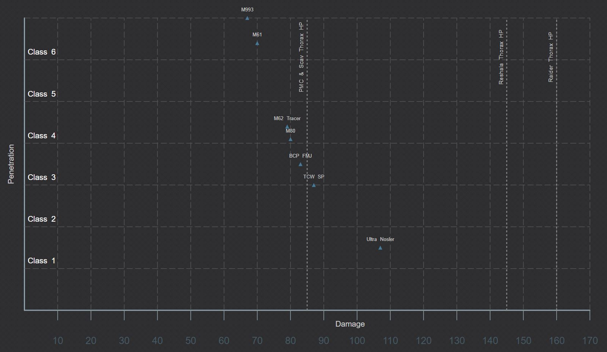

Overview
Escape From Tarkov has many weapons for players to choose from. However, what makes the game unique compared to other games is the ammo. ammunition is Escape From Tarkov is what makes a weapon lethal and not the attachments. The reason being is that there are many ammo types that do not have good armor penetration or even flesh damage. This means you could me landing a lot of shots but not killing any enemies due to that fact you are using bad ammo. All players should know that the ammo is as important as the gun and attachments. This page provdies some ammo charts for the most common ammo types and some tips on ammo.
9mm Chart
Pst gzh and m882 rounds are the most common in the early stages of the game as well as the best eraly game rounds for 9mm. PBP gzh and AP 6.3 rounds are the best in class but are extremely expensive.
5.56 Chart
The most common ammo for 556 early game is M855. Overall a solid round to use. Warmageddon is great for flesh damage but lacks any armor penetration so avoid this in the later stages of the game. The best rounds overall for the 556 caliber is the M855A1 rounds. They can penetrate class 4 armor and have solid damage and they are able to be purchase. SSA AP and M995 are the best rounds stat wise but are incredibly rare to find and not sold by traders.
5.45x39 Chart
The 5.45x39 weapons are the most commonly used weapons in the game and have a variety of ammos to chose from but also a lot you should avoid if possible. Any of the rounds that do not penetrate above class armor should always be avoided because the higher pen rounds are available early game and are not that more expensive. PS rounds are available early on and should be the minimum a player should settle for. All of the high penetration ammo can be found in raid on the map Reserve.
762x51 Chart
The 762x51 caliber lacks a variety of ammo types and the good rounds are not available until very late into the game. However, BCP FMJ rounds are available early and overall have good stats. You should not use the Ultra Nosler rounds unless you plan on sniping and aiming for headshots.